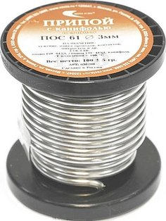
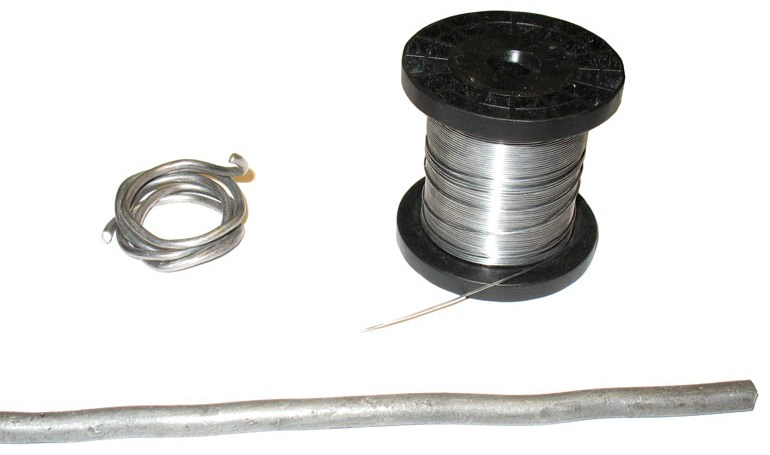

Припои
Пайка представляет собой соединение твердых металлов при помощи расплавленного припоя, имеющего температуру плавления меньшую, чем температура плавления основного металла.
Припой — металл или сплав, который служит для соединения в расплавленном состоянии, в промежутке (шве) между деталями, поэтому припой должен иметь более низкую температуру плавления, чем соединяемые металлы. Припой должен хорошо растворять основной металл, легко растекаться по его поверхности, хорошо смачивать всю поверхность пайки, что обеспечивается лишь при полной чистоте смачиваемой поверхности основного металла. По своему составу припои разделяются на несколько групп, из которых наиболее важная — оловянно-свинцовые припои.
В зависимости от химического состава и температуры плавления припоев различают пайку твердыми и мягкими припоями. К твердым относятся припои с температурой плавления выше 400°С, к мягким (легким) — припои с температурой плавления до 400°С.
Припои различных марок имеют различные свойства в зависимости от комбинации олова, свинца, висмута, меди, цинка, кадмия, серебра. Припои имеют составляющие, образующие сплавы с соединяемыми металлами. Только некоторые из марок припоя предназначены для сборки электронных модулей. В настоящее время применяются традиционные и бессвинцовые припои. Традиционные припои – оловянно-свинцовые сплавы или близкие к ним. Из традиционных марок для монтажа компонентов на платах применяется припой марки ПОС 61.
Припой выпускается в виде литых чушек, прутков, проволоки или тонкой трубки, содержащей для облегчения пайки наполнитель аналогичный флюсу. В расплавленном состоянии припой должен обеспечивать хорошее смачивание соединяемых поверхностей и тягучесть, достаточно прочное механическое соединение деталей после остывания пайки.
Предельная температура расплавления припоев для сборки электронных модулей – 300 °С. Для снижения температуры плавления припоя используется явление эвтектики. Соотношение металлов в сплаве, когда температура плавления становиться ниже, чем любого из металлов в сплаве – эвтектика. Припой это сплав, имеющий свойство эвтектичности.

Рис. 1 - Припой ПОС 61 в виде проволки
Комбинация составляющих припоя позволяет получить высококачественную пайку, которая выдерживает широкий диапазон температур при эксплуатации электронного модуля.
Бессвинцовые припои должны заменить свинцово-содержащие. Европейская комиссия по законодательству запретила использование свинца в производстве электроники с 2006 года. Бессвинцовые сплавы обладают более высокой прочностью по сравнению со сплавами олова и свинца, устойчивостью к перепадам температур и рекомендуются для пайки компонентов с разными тепловыми коэффициентами расширения. Пайки бессвинцовыми припоями матовые. Стоимость бессвинцовых припоев выше из-за повышенного содержания серебра.
Нагретый припой соединяется с металлами, если поверхности паяемых деталей зачищены, другими словами с них механически удалены образовавшиеся с течением времени пленки окислов.
Электронику лучше всего паять припоем ПОС-61 (или ближайшими импортными аналогами, например с 63% Sn).
"ПОС" означает Припой Оловянно-Свинцовый. Число 61 – 61% олова. Соответственно припой ПОС-30 содержит только 30% олова.
Таблица 1
| Марка | Состав | Температура полного расплавления припоя,°С |
|---|---|---|
| ПОССу 61-0,5 | олово 61 %, сурьма 0.5 %, свинец 38.5 % | 189 |
| ПОС 61 | олово 61 %, свинец 39 % | 190 |
| ПОС 61М | олово 61 %, свинец 37 %, медь 2 % | 192 |
ПОС 90 — для пайки внутренних швов пищевой посуды (кастрюли и т.п.).
ПОС 40 — паяние латуни, железа и медных проводов.
ПОС 30 — паяние латуни, меди, железа, цинковых и оцинкованных листов, белой жести, приборов, радиоаппаратуры, гибких шлангов и бандажной проволоки электромоторов.
ПОС 18 — паяние свинца, железа, латуни, меди, оцинкованного железа, лужение дерева перед пайкой, заменитель припоя ПОС 40.
ПОСС 4-6 — паяние белой жести, железа, меди, свинца при наличии клепаных замочных швов, заменитель припоя ПОС 30.
Существуют еще всяческие экзотические сплавы, вроде сплава Вуда (температура плавления 65,5°C), сплава Розе (температура плавления 90°C) и т.д. Используются они в специфических областях и купить их можно только в специализированных магазинах. Припой ПОС-61 можно купить практически в любом хозмаге.
В магазинах радиодеталей можно встретить так называемые «бессвинцовые» припои. Для обучения пайке брать их не стоит, так как их характеристики (смачиваемость) хуже оловянно-свинцовых. Припои, детали, сделанные по бессвинцовой технологии обычно имеют надпись RoHS на упаковке.
Основные материалы для припоев
- Олово — мягкий, ковкий металл серебристо-белого цвета. Удельный вес при температуре 20°С - 7,31. Температура плавления 231,9°С. Хорошо растворяется в концентрированной соляной или серной кислоте. Сероводород на него почти не влияет. Ценным свойством олова является его устойчивость во многих органических кислотах. При комнатной температуре мало поддается окислению, но при воздействии температуры ниже 18°С способен переходить в серую модификацию (“оловянная чума”). В местах появления частиц серого олова происходит разрушение металла. Переход белого олова в серое резко ускоряется при понижении температуры до —50°С. Для пайки может применяться как в чистом виде, так и в виде сплавов с другими металлами.
- Свинец — синевато-серый металл, мягкий, легко поддается обработке, режется ножом. Удельный вес при температуре 20°С 11,34. Температура плавления 327qC. На воздухе окисляется только с поверхности. В щелочах, а также в азотной и органических кислотах растворяется легко. Стоек против воздействий серной кислоты и сернокислых соединений. Применяется для изготовления припоев.
- Кадмий — серебристо-белый металл, мягкий, пластичный, механически непрочный. Удельный вес 8,6. Температура плавления 321°С. Применяется как для антикоррозийных покрытий, так и в сплавах со свинцом, оловом, висмутом для легкоплавких припоев.
- Сурьма — хрупкий серебристо-белый металл. Удельный вес 6,68. Температура плавления 630,5°С. На воздухе не окисляется. Применяется в сплавах со свинцом, оловом, висмутом, кадмием для легкоплавких припоев.
- Висмут — хрупкий серебристо-серый металл. Удельный вес 9,82. Температура плавления 271°С. Растворяется в азотной и горячей серной кислотах. Применяется в сплавах с оловом, свинцом, кадмием для получения легкоплавких припоев.
- Цинк — синевато-серый металл. В холодном состоянии хрупок. Удельный вес 7,1. Температура плавления 419°С. В сухом воздухе окисляется, во влажном воздухе покрывается пленкой окиси, которая предохраняет его от разрушения. В соединении с медью дает ряд прочных сплавов.. Легко растворяется в слабых кислотах. Применяется для изготовления твердых припоев и кислотных флюсов.
- Медь — красноватый металл, тягучий и мягкий. Удельный вес 8,6 - 8,9. Температура плавления 1083 С. Растворяется в серной и азотной кислотах и в аммиаке. В сухом воздухе почти не поддается окислению, в сыром воздухе покрывается окисью зеленого цвета. Применяется для изготовления тугоплавких припоев и сплавов.
Мягкие припои
Пайка мягкими припоями получила широкое распространение, особенно при производстве монтажных работ. Наиболее часто применяемые мягкие припои содержат значительное количество олова.
Таблица 2
| Марка | Химический состав в % | Температура, °C | ||||||
|---|---|---|---|---|---|---|---|---|
| олово | свинец | сурьма | примесей не более | |||||
| медь | висмут | мышьяк | начало | конец | ||||
| ПОС-90 | 90 | 9,62 | 0,15 | 0,08 | 0,1 | 0,05 | 183 | 222 |
| ПОС-40 | 40 | 57,75 | 2,0 | 0,1 | 0,1 | 0,05 | 183 | 230 |
| ПОС-30 | 30 | 67,7 | 2,0 | 0,15 | 0,1 | 0,05 | 183 | 250 |
| ПОС-18 | 18 | 79,2 | 2,5 | 0,15 | 0,1 | 0,05 | 183 | 270 |
При выборе типа припоя необходимо учитывать его особенности и применять в зависимости от назначения спаиваемых деталей. При пайке деталей, не допускающих перегрева, используются припои, имеющие низкую температуру плавления.
Наибольшее применение находит припой марки ПОС-40. Он применяется при пайке соединительных проводов, сопротивлений, конденсаторов. Припой ПОС-30 используют для пайки экранирующих покрытий, латунных пластинок и других деталей. Наряду с примеиением стандартных марок находит применение и припой ПОС-60 (60% олова и 40% свинца).
Мягкие припои изготовляются в виде прутков, болванок, проволоки (диаметром до 3 мм) и трубок, наполненных флюсом. Технология указанных припоев без специальных примесей несложна и вполне осуществима в условиях мастерской: свинец расплавляют в графитовом или металлическом тигле и в него небольшими частями добавляют олово, содержание которого определяют в зависимости от марки припоя. Жидкий сплав перемешивают, снимают нагар с поверхности и расплавленный припой выливают в деревянные или стальные формочки. Добавление висмута, кадмия и других присадок не обязательно.

Рис. 2 - Снизу – пруток припоя. Слева – проволока диаметром 3 мм с центральным каналом из канифоли. Справа катушка импортного припоя "radiel–fondam" диаметром 0,8 мм с центральным каналом с безканифольным флюсом.
Для пайки различных деталей, не допускающих значительного перегрева, применяются особо легкоплавкие припои, которые получают добавлением в свинцово-оловянные припои висмута и кадмия или одного из этих металлов. В табл. 3 приведены составы некоторых легкоплавких припоев.
Таблица 3
| Химический состав в % | Температура плавления в °С | |||
|---|---|---|---|---|
| олово | свинец | висмут | кадмий | |
| 45 | 45 | 10 | — | 160 |
| 43 | 43 | 14 | — | 155 |
| 40 | 40 | 21 | — | 145 |
| 33 | 33 | 34 | — | 124 |
| 15 | 32 | 53 | — | 96 |
| 13 | 27 | 50 | 10 | 70 |
| 12,5 | 25 | 50 | 12,5 | 66 |
При использовании висмутовых и кадмиевых припоев следует учитывать, что они обладают большой хрупкостью и создают менее прочный спай, чем свинцово-оловянные.
Таблица 4
| Припои | Температура плавления, °С |
Коэффициент растекаемости при 260°С на меди с ФКСп |
Химический состав | Назначение | ||
|---|---|---|---|---|---|---|
| Группа | Марка | Солидус | Ликвидус | |||
| Оловянно-свинцовые | ПОС30 | 183 | 256 | — | 29-30% Sn, 1,5-2% Sb 68-69% Pb |
Пайка меди и ее сплавов, оцинкованного и луженного железа, углеродистых и нержавеющих сталей |
| ПОС40 | 183 | 235 | 0,6 | 39-40% Sn, 1,5-2% Sb 58-59% Pb |
Пайка и горячее лужение меди и ее сплавов, сталей, различных металлов с покрытиями олова, серебра, никеля, цинка. Пайк деталей и монтажных соединений неответственного назначения. | |
| ПОС61 | 183 | 185 | 1,0 | 59-61% Sn, ≤0,8% Sb 38-40% Pb, 0,314% примеси |
Пайка и горячее лужение металлов и металлизированных пластмасс, стекла, радиокерамики и т.п. Для пайки монтажа ручной и групповой | |
| ПОС61А | 183 | 185 | 1,3 | 59-59,5% Sn, 0,8% Sb, 38-40% Pb, 0,25% примеси |
То же | |
| ПОС61М | 183 | 185 | 1,3 | 59-61% Sn, ≤0,8% Sb 38-40% Pb, 1,5-2% Cu, 0,4% примеси |
Пайка паяльником деталей и монтажа микропроводов | |
| Оловянно-свинцово- сурьмяные |
ПОСС4-6 | 245 | 265 | — | 3-4% Sn, 5-6% Sb 90-92% Pb |
Пайка и лужение меди и ее сплавов, с повышенной прочностью. |
| ПОСС30-5 | 195 | 202 | — | 29-31% Sn, 5-5,5% Sb 63-66% Pb |
Пайка медных, никелевых сплавов нихрома, стали, ковара, серебра, деталей с повышенной прочностью. | |
| Оловянно-свинцово- кадмиевые |
ПОСК50 | 142 | 145 | 0,5 | 49-51% Sn, 17-19% Cb 30-34% Pb |
Пайка меди и ее сплавов, луженых и серебряных поверхностей. Соединение деталей, чувствительных к перегреву. |
| Оловянно-серебряные | ПСр2,5 | 295 | 305 | — | 5-6% Sn, 2,2-2,8% Ag 91-93% Pb |
Пайка меди и ее сплавов, сталей, ковара, деталей с гальваническими покрытиями никеля, серебра при температуре эксплуатации до 200°С |
| ПСр2 | 225 | 235 | 0,7 | 29-31% Sn, 1,7-2,3% Ag 61,5-64,5% Pb 4,5-5,5 Cd |
||
| ПСр1,5 | 265 | 270 | — | 14-16% Sn, 1,5-1,9% Ag 82-85% Pb |
||
| Оловянно-свинцово- серебряные |
ПОССр2 | 169 | 173 | — | 57,8-59,8% Sn, ≤0,79% Sb 1,9-2,1% Ag 37,5-39,5% Pb |
Пайка и лужение серебряной керамики. Пайка микромодулей. |
| ПОСр3 | 220 | 220 | — | 57,8-59,8% Sn, 2,7-3,3% Ag |
Пайка меди и ее сплавов, изделий в вакуумноплотными соединениями | |
| Оловянно-висмутовые | ПОСВ33 | 120 | 130 | 0,7 | 32,4-34,4% Sn, 32,3-34,3% Pb, 32,3-34,3% Bi |
Пайка меди и ее сплавов, деталей с покрытиями никелем, оловом, серебром. Применяется для деталей, чувствительных к перегреву, для термопредохранителей, при ступенчатой пайке. |
| ПОСВ50 | 90 | 92 | 0,4 | 24,5-25,5% Sn, 24,5-25,5% Pb, 49-51% Bi |
||
| ПОСВ50К | 66 | 70 | — | 12-13% Sn, 12-13% Cd, 24,5-25,5% Pb, 49-51% Bi |
||
| Оловянно-цинковые | П150А | 150 | 165 | — | 37,5-39,5% Sn, 56,7-58,7% Cd, 2,8-4,8% Zn |
Пайка алюминиевых сплавов с медью и её сплавами, с титановыми сплавами; с деталями, покрытыми серебром, никелем, оловом. Применяется также для ультразвукового и бесфлюсового лужения. |
| П170А | 170 | 176 | — | 78-80% Sn, 19-21% Cd, 0,9-1,1% Ag |
||
| П200А | 199 | 210 | — | 89-91% Sn, 9-11% Zn |
||
| П250А | 200 | 250 | — | 79-81% Sn, 19-21% Zn |
||
| П300А | 266 | 310 | — | 59-61% Sn, 39-41% Cd |
||
| Индиевые | ПОСИ30 | 117 | 200 | — | 30% Jn, 42% Sn, 28% Pb |
Пайка меди и ее сплавов, деталей с покрытиями никелем, оловом, серебром, золотом, платиной; полупроводниковых приборов. . |
| ПСр3И | 141 | 141 | — | 97% Jn, 3% Ag |
||
| Золотые | ПОСЗл3 | 180 | 215 | — | 57-59% Sn, 3% Au, 38-40% Pb, ≤0,77% Sb |
Пайка радиоэлектронных деталей в микромодульном исполнении. |
| Галлиевые | ПГМ | 50 | 50 | — | 65-68% Ga, 32-35% Cu |
Пайка меди и ее сплавов. Применяется для самоупрочняющихся соединений и пайки термочувствительных деталей. |
Солидус – температура, ниже которой сплав полностью твердый. Ликвидус – температура, выше которой сплав полностью жидкий. Следовательно при температуре между температурами ликвидус и солидус сплав будет представлять собой «кашу».
Эвтектическим для системы Sn–Pb будет сплав с 61,9% олова, поэтому припой ПОС-61 самую низкую температуру ликвидус. Припой ПОС61 также обладает самой высокой прочностью среди припоев ПОС. Предел прочности при растяжении 6,7 – 7,5 кг/мм2.
Твердые припои
Твердые припои создают высокую прочность шва. В электро- и радиомонтажных работах они используются значительно реже, чем мягкие припои.
Таблица 5
| Марка | Химический состав в % | Температура плавления в оС | |||||
|---|---|---|---|---|---|---|---|
| медь | цинк | примесей не более | |||||
| сурьма | свинец | олово | железо | ||||
| ПМЦ-42 | 40—45 | остальное | 0,1 | 0,5 | 1,6 | 0,5 | 830 |
| Г1МЦ-47 | 45—49 | 0,1 | 0,5 | 1,5 | 0,5 | 850 | |
| ПМЦ-53 | 49-53 | 0,1 | 0,5 | 1,5 | 0,5 | 870 | |
В зависимости от содержания цинка изменяется цвет припоя. Эти припои применяются для пайки бронзы, латуни, стали и других металлов, имеющих высокую температуру плавления. Припой ПМЦ-42 применяется при пайке латуни с содержанием 60—68% меди. Припой ПМЦ-52 применяется при пайке меди и бронзы. Медно-цинковые припои изготовляются путем сплавления меди и цинка в электропечах, в графитовом тигле. По мере расплавления меди в тигель добавляют цинк, после расплавления цинка добавляется около 0,05% фосфорной меди. Расплавленный припой разливается в формочки. Температура плавления припоя должна быть меньше температуры плавления припаиваемого металла. Кроме указанных медно-цинковых припоев, находят применение и серебряные припои.
Таблица 6
| Марка | Химический состав в % | Температура плавления в оС | ||||
|---|---|---|---|---|---|---|
| серебро | медь | цинк | примеси не более | |||
| свинец | всего | |||||
| ПСР-10 | 9,7—10,3 | 52-54 | Остальное | 0,5 | 1,0 | 830 |
| ПСР-12 | 11,7-12,3 | 35-37 | 0,5 | 1,0 | 785 | |
| ПСР-25 | 24,7-25,3 | 39-41 | 0,5 | 1,0 | 765 | |
| ПСР-45 | 44,5-45,5 | 20,5 --30,5 | 0,3 | 0,5 | 720 | |
| ПСР-65 | 64,5-65,5 | 19,5 -—20,5 | 0,3 | 0,5 | 740 | |
| ПСР-70 | 69,5-70,5 | 25,5— 26,5 | 0,3 | 0,5 | 780 | |
Серебряные припои обладают большой прочностью, спаянные ими швы хорошо изгибаются и легко обрабатываются. Припои ПСР-10 и ПСР-12 применяются для пайки латуни, содержащей не менее 58% меди, припои ПСР-25 и ПСР-45 — для пайки меди, бронзы и латуни, припой ПСР-70 с наиболее высоким содержанием серебра — для пайки волноводов, объемных контуров и т. п.
Таблица 7
| Химический состав в % | Температураплавления воC | ||||
|---|---|---|---|---|---|
| серебро | медь | цинк | кадмий | фосфор | |
| 20 | 45 | 30 | 5 | 780 | |
| 72 | 18 | — | — | — | 780 |
| 15 | 80 | — | — | 5 | 640 |
| 50 | 15,5 | 16,5 | 18 | — | 630 |
Первый из них применяется для пайки меди, стали, никеля, второй, обладающий высокой проводимостью,— для пайки проводов; третий может применяться для пайки меди, но не пригоден для черных металлов; четвертый припой обладает особой легкоплавкостью, является универсальным для пайки меди, ее сплавов, никеля, стали.
В ряде случаев в качестве припоя используется технически чистая медь с температурой плавления 1083°С.
Припои для пайки алюминия
Пайка алюминия вызывает большие затруднения вследствие его способности легко окисляться на воздухе. В последнее время находит применение пайка алюминия с помощью ультразвуковых паяльников.
Таблица 8
| Химический состав в % | Примечание | |||||
|---|---|---|---|---|---|---|
| олово | цинк | кадмий | алюминий | кремний | медь | |
| 55 | 25 | 20 | — | — | — | Мягкие припои |
| 40 | 25 | 20 | 15 | — | — | |
| 63 | 36 | — | 1 | — | — | |
| 45 | 50 | — | 5 | — | — | |
| 78—69 | 20-25 | 2-6 | — | — | ||
| 69,8—64,5 | 5,2-6,5 | 25-29 | Твердые припои с температурой плавления 525оС | |||
При пайке алюминия в качестве флюсов применяют органические вещества: канифоль, стеарин и т. п.
Последний припой (твердый) применяется со сложным флюсом, в состав которого входит:
- хлористый литий (25—30%),
- фтористый калий (8—12%),
- хлористый цинк (8—15%),
- хлористый калий (59—43%).
Температура плавления флюса около 450°С.
Свойства оловянно-свинцовых припоев
Наиболее важное свойство припоев — сопротивление срезу, так как большинство паяных соединений работает на срез.
Оловянно-свинцовые припои марок ПОС 18, ПОС 30, ПОС 40 имеют более высокое сопротивление срезу, чем чистые олово и свинец, и потому применение их для получения прочного шва дает более хорошие результаты.
Припои должны обладать как высоким сопротивлением разрыву, так и максимальной вязкостью. По данным таблицы можно установить взаимозаменяемость высокооловянных и малооловянных припоев. Например, припой ПОС 18 в отношении вязкости несколько лучше припоя ПОС 40, причем незначительно отличается от последнего по прочности. Припой ПОС 50 вполне может быть заменен припоем ПОС 40 и ПОС 30. Знания твердости важны в том отношении, что более твердые припои лучше сопротивляются истиранию, чем мягкие.
Поэтому все преимущества в этом отношении будут за припоем ПОСС 4-6. Остальные припои (ПОС 18, ПОС 30 и ПОС 40) имеют несколько меньшую твердость. Ударная вязкость (сопротивление удару) имеет наибольшее значение для чистого олова, но припой ПОС 40 и ПОС 30 немногим отличается в этом отношении от олова. Поэтому припой ПОС 40 может быть применен в особых случаях, где места спайки подвергаются сильной вибрации. Для обычных условий работы, при небольших вибрациях, применяют припой ПОС 18.
Температура плавления припоя имеет тоже большое значение: от нее зависит выбор метода паяния. Наиболее низкой температурой плавления обладает припой ПОС 62, содержащий 62 % олова. Этот припой применяют в случаях, когда при паянии нельзя перегревать детали, например при соединении очень тонких проводов. Возможность применения в таких случаях тройных легкоплавких сплавов, в которых низкая точка плавления достигается добавкой третьего компонента (например, висмута), исключается, в связи с тем, что тройные сплавы не обладают такой высокой вязкостью, как двойные сплавы.
Таблица 9
| Марка припоя | Температура плавления, °С |
Температура начала расплавления, °С |
Интервал затвердения, °С |
Предел прочности при растяжении, кгс\мм2 |
Относительное удлинение |
|---|---|---|---|---|---|
| 0,1 | 232 | 232 | 0 | 1,9 | 43 |
| ПОС 90 | 222 | 183 | 39 | 4,3 | 25 |
| ПОС 50 | 209 | 183 | 26 | 3,6 | 32 |
| ПОС 40 | 235 | 183 | 52 | 3,2 | 63 |
| ПОС-30 | 256 | 183 | 73 | 3,3 | 58 |
| ПОС 25 | 265 | 183 | 82 | 2,8 | 52,1 |
| ПОС 18 | 277 | 183 | 94 | 2,8 | 67 |
| ПОСС 4-6 | 265 | 245 | 20 | 5,9 | 23,7 |
| С1 | 327 | 327 | 0 | 1,1 | 45 |
Припой ПОС 62 теперь применяют мало, так как перегрева при паянии легко избежать, применив припой ПОС 40 очень тонкого сечения, например в виде проволоки диаметром 1—2 мм. Под действием паяльника расплавление тонкой проволоки происходит быстро, вследствие чего уменьшается до минимума время воздействия высокой температуры.
Практика показала, что припой марки ПОСС 4—6 в отношении прочности спайки равноценен припою марки ПОС 30 для всех материалов, кроме оцинкованного железа и меди. При этом припой марки ПОС 40 в большинстве случаев обладает наибольшей прочностью и в этом отношении превосходит высокооловянный припой марки ПОС 62 и чистое олово. Поэтому для получения наибольшей прочности шва ни в коем случае не следует применять чистое олово.
Припой марки ПОС 18 при паянии встык дает более высокую прочность спайки, чем припой марки ПОС 40. Поэтому припой ПОС 18 применяют, когда температура плавления припоя не имеет решающего значения.